Item table
Every item's bonuses side by side.
All 109 items. The numbered columns are the 12 bonuses that items carry most often; everything an item does, including effects with no column, is in the Effect column beside its name. Hover over a heading for its full name. Click a heading to sort and use the buttons to narrow the list.
84 items are equipped on a unit, 5 are equipped and plant an object beside the wearer when the fight starts, and 20 are global: they work for the whole warband without being equipped, and for those the columns show the bonus every ally receives. Loot offers are tier 1 from round 1, tier 2 from round 8, tier 3 from round 16, tier 4 from round 24 and tier 5 from round 32; see Loot and items.
| Item | Effect | Tier | Kind | Atk Dmg | Max HP | Atk speed | AMR | Mana per Sec | Magic Resist | Critical strike chance | Critical strike Dmg | Evade | Atk Dmg (%) | Dmg Reduce | HP Regen |
|---|---|---|---|---|---|---|---|---|---|---|---|---|---|---|---|
 Barbed Dart Barbed Dart | The holder: +10 attack damage. When the holder lands an attack, it applies Barbed Venom (20 magical damage taken per second) to the unit it hit for 3 seconds. | Tier 1 | Offensive | 10 | |||||||||||
 Brawler's Wraps Brawler's Wraps | The holder: +15 attack damage, +10% attack speed. | Tier 1 | Offensive | 15 | 10 | ||||||||||
 Cinder Core Cinder Core | The holder: +7 mana per second. Only a unit that casts an ability with mana can hold it. | Tier 1 | Support | 7 | |||||||||||
 Heartwood Charm Heartwood Charm | The holder: +375 maximum health. | Tier 1 | Defensive | 375 | |||||||||||
 Hunter's Edge Hunter's Edge | The holder: +12 attack damage. | Tier 1 | Offensive | 12 | |||||||||||
 Ironwood Greatblade Ironwood Greatblade | The holder: +33 attack damage. | Tier 1 | Offensive | 33 | |||||||||||
 Keen Whetstone Keen Whetstone | The holder: +15% critical strike chance, critical strikes deal 175% damage instead of the usual 200%. | Tier 1 | Offensive | 15 | 175 | ||||||||||
 Leechfang Mask Leechfang Mask | The holder: +30% lifesteal on attack damage. | Tier 1 | Defensive | ||||||||||||
 Mistveil Talisman Mistveil Talisman | The holder: +25% evasion. | Tier 1 | Defensive | 25 | |||||||||||
 Mossweave Circlet Mossweave Circlet | Every second, the holder heals itself and all allies within 1 cell for 20 health. | Tier 1 | Defensive | ||||||||||||
 Oathbound Insignia Oathbound Insignia | Global item: it is never given to a unit and works from the moment you own it. Counts as one extra unit toward Oathbound, as long as at least one Oathbound unit of yours is on the board (how alliances count). It is no longer offered as loot once you own one copy. | Tier 1 | Global | ||||||||||||
| Quickstep Gauntlets | The holder: +25% attack speed. | Tier 1 | Offensive | 25 | |||||||||||
 Riveted Mail Riveted Mail | The holder: +7 armour. | Tier 1 | Defensive | 7 | |||||||||||
 Runescribed Quill Runescribed Quill | The holder: +12% attack damage. Only a unit that casts an ability with mana can hold it. | Tier 1 | Offensive | 12 | |||||||||||
| Shroud Pennant | At the start of combat, the holder applies Cowl Ward (+30% magic resistance) to itself and all allies within 1 cell for the rest of combat. | Tier 1 | Support | ||||||||||||
 Stalwart Pennant Stalwart Pennant | At the start of combat, the holder applies Stalwart Vigour (+250 maximum health) to itself and all allies within 1 cell for the rest of combat. | Tier 1 | Support | ||||||||||||
| Warding Cowl | The holder: +50% magic resistance, +10 health regeneration per second. | Tier 1 | Defensive | 50 | 10 | ||||||||||
 Wellspring Brooch Wellspring Brooch | The holder: +4 mana per second, +150 maximum health. | Tier 1 | Support | 150 | 4 | ||||||||||
 Adderfang Orb Adderfang Orb | When the holder lands an attack, it applies Adder Venom (35 magical damage taken per second) to the unit it hit for 3 seconds. | Tier 2 | Support | ||||||||||||
 Barbed Hauberk Barbed Hauberk | The holder: +5 armour. When the holder is hit by an attack, it deals 15 pure damage to the attacker. | Tier 2 | Defensive | 5 | |||||||||||
| Brookwalker Sandals | Every 10 seconds, the holder restores 25 mana to itself and all allies within 2 cells. | Tier 2 | Support | ||||||||||||
 Corroding Axe Corroding Axe | When the holder lands an attack, it applies Corroded (items) (-5 armour) to the unit it hit for 5 seconds. | Tier 2 | Offensive | ||||||||||||
| Global item: it is never given to a unit and works from the moment you own it. Counts as one extra unit toward Cutthroat, as long as at least one Cutthroat unit of yours is on the board (how alliances count). It is no longer offered as loot once you own one copy. | Tier 2 | Global | |||||||||||||
 Fevered Armlet Fevered Armlet | The holder: +120 attack damage, +10 armour. The holder also takes 80 pure damage every second, for the whole fight. | Tier 2 | Offensive | 120 | 10 | ||||||||||
 Ironbark Buckler Ironbark Buckler | The holder: +10 armour. | Tier 2 | Defensive | 10 | |||||||||||
 Ironsight Monocle Ironsight Monocle | Global item: it is never given to a unit and works from the moment you own it. Counts as one extra unit toward Ironsight, as long as at least one Ironsight unit of yours is on the board (how alliances count). It is no longer offered as loot once you own one copy. | Tier 2 | Global | ||||||||||||
 Longshot Scope Longshot Scope | The holder: +35 attack damage, +8 attack range in cells. Only a ranged unit (attack range 2 or more) can hold it. | Tier 2 | Offensive | 35 | |||||||||||
 Mirrorweave Cloak Mirrorweave Cloak | The holder: +20% evasion, +20% magic resistance. | Tier 2 | Defensive | 20 | 20 | ||||||||||
 Palisade Stakes Palisade Stakes | At the start of combat, the holder plants 3 Spiked Palisade units on the nearest free cells. Spiked Palisade is a placeable: it never moves or attacks, and it does not keep your side in the fight. It is no longer offered as loot once you own one copy. | Tier 2 | Defensive | ||||||||||||
 Picket Halberd Picket Halberd | The holder: +25% evasion. When the holder lands an attack (at most once every 10 seconds), it applies Disarmed (items) (cannot attack) to the unit it hit for 3 seconds. | Tier 2 | Support | 25 | |||||||||||
 Quilted Gambeson Quilted Gambeson | The holder: +5 armour, +200 maximum health. | Tier 2 | Defensive | 200 | 5 | ||||||||||
 Rampart Targe Rampart Targe | The holder: +375 maximum health, 8% less physical and magical damage taken. | Tier 2 | Defensive | 375 | 8 | ||||||||||
 Reaver's Cleaver Reaver's Cleaver | The holder: +42 attack damage. | Tier 2 | Offensive | 42 | |||||||||||
 Recruiter's Ledger Recruiter's Ledger | Global item: it is never given to a unit and works from the moment you own it. Each shop reroll costs 1 gold less. It is no longer offered as loot once you own one copy. | Tier 2 | Global | ||||||||||||
 Shade Pennon Shade Pennon | Global item: it is never given to a unit and works from the moment you own it. Counts as one extra unit toward Shade, as long as at least one Shade unit of yours is on the board (how alliances count). It is no longer offered as loot once you own one copy. | Tier 2 | Global | ||||||||||||
 Spellward Amulet Spellward Amulet | The holder: +35% magic resistance, +150 maximum health. | Tier 2 | Defensive | 150 | 35 | ||||||||||
 Stepstone Charm Stepstone Charm | At the start of combat, the holder leaps behind the farthest enemy and restores 60 mana to itself. | Tier 2 | Support | ||||||||||||
 Stormglass Shard Stormglass Shard | The holder: +25 attack damage, +20% critical strike chance. | Tier 2 | Offensive | 25 | 20 | 200 | |||||||||
 Straw Decoy Straw Decoy | At the start of combat, the holder plants a Straw Decoy in the nearest free cell. Straw Decoy is a placeable: it never moves or attacks, and it does not keep your side in the fight. It is no longer offered as loot once you own one copy. | Tier 2 | Defensive | ||||||||||||
 Tallyknife Tallyknife | The holder: +10 attack damage. In addition, the holder: +3 attack damage for each enemy the unit has killed this match, up to +111 attack damage at 37 kills; kills are counted by the unit, with or without the item, and carry over from round to round. | Tier 2 | Offensive | 10 | |||||||||||
 Trophy Cloak Trophy Cloak | The holder: +50 maximum health for each enemy the unit has killed this match, up to +3,000 maximum health at 60 kills; kills are counted by the unit, with or without the item, and carry over from round to round. | Tier 2 | Defensive | ||||||||||||
 Twin Fang Daggers Twin Fang Daggers | The holder: +20% attack speed, +10% critical strike chance, critical strikes deal 175% damage instead of the usual 200%. | Tier 2 | Offensive | 20 | 10 | 175 | |||||||||
 Venomist Sigil Venomist Sigil | Global item: it is never given to a unit and works from the moment you own it. Counts as one extra unit toward Venomist, as long as at least one Venomist unit of yours is on the board (how alliances count). It is no longer offered as loot once you own one copy. | Tier 2 | Global | ||||||||||||
 Vowkeeper's Brand Vowkeeper's Brand | The holder: +25 attack damage. At the start of combat, the holder applies Blessed Healing (+20% healing received) to all allies (itself included) for the rest of combat. | Tier 2 | Offensive | 25 | |||||||||||
 Wayfarer's Lantern Wayfarer's Lantern | The holder: +5 mana per second, +15% movement speed. | Tier 2 | Support | 5 | |||||||||||
 Woodsman's Hatchet Woodsman's Hatchet | The holder: +25 attack damage. | Tier 2 | Offensive | 25 | |||||||||||
| Zephyr Staff | The holder: +10% evasion. When the holder is hit by an attack (at most once every 15 seconds), it applies Rooted (items) (cannot move) to the attacker for 2 seconds. | Tier 2 | Support | 10 | |||||||||||
 Abyssal Emblem Abyssal Emblem | Global item: it is never given to a unit and works from the moment you own it. Counts as one extra unit toward Abyssal, as long as at least one Abyssal unit of yours is on the board (how alliances count). It is no longer offered as loot once you own one copy. | Tier 3 | Global | ||||||||||||
| Bastion Plate | The holder: +12 armour, +250 maximum health. | Tier 3 | Defensive | 250 | 12 | ||||||||||
 Cragscale Coat Cragscale Coat | The holder: +15 armour, -30% attack speed. | Tier 3 | Defensive | -30 | 15 | ||||||||||
 Duelist Token Duelist Token | Global item: it is never given to a unit and works from the moment you own it. Counts as one extra unit toward Duelist, as long as at least one Duelist unit of yours is on the board (how alliances count). It is no longer offered as loot once you own one copy. | Tier 3 | Global | ||||||||||||
 Executioner's Glaive Executioner's Glaive | The holder: +40 attack damage, +15% critical strike chance. | Tier 3 | Offensive | 40 | 15 | 200 | |||||||||
 Fencer's Foil Fencer's Foil | The holder: +25 attack damage, +30% attack speed. | Tier 3 | Offensive | 25 | 30 | ||||||||||
| Frenzy Visage | The holder: cannot cast abilities, +60% attack speed, +15% lifesteal on attack damage. | Tier 3 | Offensive | 60 | |||||||||||
| Gilded Gauntlet | The holder: +30% attack speed. | Tier 3 | Support | 30 | |||||||||||
 Hourglass Prism Hourglass Prism | The holder: +43% mana gained from attacking and from taking damage, +2 mana per second. Only a unit that casts an ability with mana can hold it. | Tier 3 | Support | 2 | |||||||||||
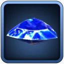 Lastlight Disc | The holder: +500 maximum health. When the holder is below 50% health after taking damage (once per combat), it applies Last Light (100% less physical and magical damage taken, cannot attack, cannot be targeted by enemies) to itself for 2 seconds. | Tier 3 | Defensive | 500 | |||||||||||
 Nullstone Ward Nullstone Ward | The holder: +40% magic resistance, 10% less physical and magical damage taken. | Tier 3 | Defensive | 40 | 10 | ||||||||||
| Oxhide Helm | The holder: +1,000 maximum health, -50% mana gained from attacking and from taking damage. | Tier 3 | Defensive | 1,000 | |||||||||||
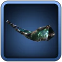 Rallying Horn | The holder: +200 maximum health. At the start of combat, the holder applies Rallied Fury (+20% attack speed) to itself and all allies within 1 cell for the rest of combat. | Tier 3 | Support | 200 | |||||||||||
 Ravager Seal Ravager Seal | Global item: it is never given to a unit and works from the moment you own it. Counts as one extra unit toward Ravager, as long as at least one Ravager unit of yours is on the board (how alliances count). It is no longer offered as loot once you own one copy. | Tier 3 | Global | ||||||||||||
 Resonance Mantle Resonance Mantle | The holder: +30% magic resistance. At the start of combat, the holder gives itself and all allies within 2 cells a shield that absorbs 250 damage for the rest of combat. | Tier 3 | Defensive | 30 | |||||||||||
 Seer's Lens Seer's Lens | The holder: +5 mana per second, +20% magic resistance, +10 health regeneration per second. | Tier 3 | Support | 5 | 20 | 10 | |||||||||
 Skullcrack Maul Skullcrack Maul | The holder: +25 attack damage. When the holder lands an attack (25% chance; at most once every 2.3 seconds), it deals 100 physical damage to the unit it hit and applies Stunned (items) (cannot move, attack or cast) to the same target for 1.5 seconds. | Tier 3 | Offensive | 25 | |||||||||||
| Squall Sceptre | The holder: +10 mana per second. When the holder is hit by an attack (at most once every 10 seconds), it applies Swept Aloft (cannot move, attack or cast, 100% less physical and magical damage taken, cannot be targeted by enemies) to the attacker for 2.5 seconds. | Tier 3 | Support | 10 | |||||||||||
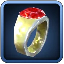 Stalker Crest | Global item: it is never given to a unit and works from the moment you own it. Counts as one extra unit toward Stalker, as long as at least one Stalker unit of yours is on the board (how alliances count). It is no longer offered as loot once you own one copy. | Tier 3 | Global | ||||||||||||
 Sunderglass Edge Sunderglass Edge | The holder: +30% attack speed, +300 maximum health. When the holder lands an attack (at most once every 5 seconds), it applies Weakened (-20% attack damage) to the unit it hit for 5 seconds. | Tier 3 | Support | 300 | 30 | ||||||||||
 Sunfruit Sapling Sunfruit Sapling | At the start of combat, the holder plants a Sunfruit Tree in the nearest free cell. Sunfruit Tree is a placeable: it never moves or attacks, and it does not keep your side in the fight. It is no longer offered as loot once you own one copy. | Tier 3 | Support | ||||||||||||
 Sweeping Warblade Sweeping Warblade | The holder: +50 attack damage. When the holder lands an attack, it deals 40 physical damage to the unit it hit and all enemies within 1 cell of it. Only a melee unit (attack range 1) can hold it. | Tier 3 | Offensive | 50 | |||||||||||
 Thunderchain Baton Thunderchain Baton | When the holder lands an attack (25% chance), it deals 150 magical damage to the unit it hit and all enemies within 1 cell of it. | Tier 3 | Offensive | ||||||||||||
 Tithe Purse Tithe Purse | Global item: it is never given to a unit and works from the moment you own it. You gain 1 extra gold every round (income). It is no longer offered as loot once you own one copy. | Tier 3 | Global | ||||||||||||
 War Drums War Drums | Global item: it is never given to a unit and works from the moment you own it. All your units, summoned ones and your commander included: +10% attack speed. It is no longer offered as loot once you own one copy. | Tier 3 | Global | 10 | |||||||||||
 Battle Hymn Battle Hymn | Global item: it is never given to a unit and works from the moment you own it. All your units, summoned ones and your commander included: +150 maximum health. It is no longer offered as loot once you own one copy. | Tier 4 | Global | 150 | |||||||||||
| Battle Standard | The holder: +200 maximum health. At the start of combat, the holder applies Rallied (items) (+15% attack damage) to itself and all allies within 1 cell for the rest of combat. | Tier 4 | Support | 200 | |||||||||||
 Colossus Shield Colossus Shield | The holder: +15 armour, +400 maximum health. | Tier 4 | Defensive | 400 | 15 | ||||||||||
 Fatespark Rod Fatespark Rod | Every 12 seconds, the holder deals 800 magical damage to the enemy with the lowest share of health left. | Tier 4 | Offensive | ||||||||||||
 Hexing Wand Hexing Wand | The holder: +10 mana per second. When the holder is hit by an attack (at most once every 15 seconds), it applies Hexed (cannot cast abilities, cannot attack, -50% movement speed) to the attacker for 3.5 seconds. | Tier 4 | Support | 10 | |||||||||||
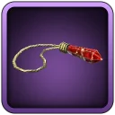 Hummingbird Charm | The holder: +80% attack speed. | Tier 4 | Offensive | 80 | |||||||||||
 Iron Discipline Iron Discipline | Global item: it is never given to a unit and works from the moment you own it. All your units, summoned ones and your commander included: +4 armour. It is no longer offered as loot once you own one copy. | Tier 4 | Global | 4 | |||||||||||
 Manaflay Blade Manaflay Blade | When the holder lands an attack, it burns up to 20 mana from the unit it hit and deals 30 physical damage to the same target. | Tier 4 | Offensive | ||||||||||||
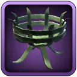 Mending Totem | At the start of combat, the holder plants a Mending Totem in the nearest free cell. Mending Totem is a placeable: it never moves or attacks, and it does not keep your side in the fight. It is no longer offered as loot once you own one copy. | Tier 4 | Support | ||||||||||||
 Merchant's Compass Merchant's Compass | Global item: it is never given to a unit and works from the moment you own it. You gain 2 extra gold every round (income). It is no longer offered as loot once you own one copy. | Tier 4 | Global | ||||||||||||
 Mothwing Saber Mothwing Saber | The holder: +35 attack damage, +35% attack speed, +35% evasion. | Tier 4 | Offensive | 35 | 35 | 35 | |||||||||
 Nullfire Mantle Nullfire Mantle | The holder: +45 attack damage. At the start of combat, the holder removes all timed debuffs from itself and applies Spell Immunity (+100% magic resistance, which blocks all magical damage) to itself for 10 seconds. | Tier 4 | Defensive | 45 | |||||||||||
 Renewal Orb Renewal Orb | The holder: +3 mana per second. When the holder casts an ability (once per combat), it restores 50 mana to itself. Only a unit that casts an ability with mana can hold it. | Tier 4 | Support | 3 | |||||||||||
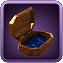 Restorer's Reliquary | When the holder is below 50% health after taking damage (once per combat), it heals itself and all allies within 3 cells for 750 health. | Tier 4 | Defensive | ||||||||||||
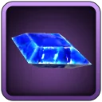 Rimefrost Hauberk | The holder: +600 maximum health. When the holder lands an attack, it applies Rime Chill (-55% attack speed, -35% movement speed) to the unit it hit for 3 seconds. | Tier 4 | Defensive | 600 | |||||||||||
 Scholar's Index Scholar's Index | Global item: it is never given to a unit and works from the moment you own it. All your units, summoned ones and your commander included: +2 mana per second. It is no longer offered as loot once you own one copy. | Tier 4 | Global | 2 | |||||||||||
 Spellbreaker Mantle Spellbreaker Mantle | The holder: +50% magic resistance, +300 maximum health. | Tier 4 | Defensive | 300 | 50 | ||||||||||
 Titanbane Spear Titanbane Spear | The holder: -50% attack damage. When the holder lands an attack, it deals pure damage to the unit it hit equal to 6% of the target's maximum health. | Tier 4 | Offensive | -50 | |||||||||||
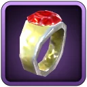 Unerring Warhammer | The holder: +90 attack damage. | Tier 4 | Offensive | 90 | |||||||||||
 Archmage Codex Archmage Codex | The holder: +15 mana per second, +15% attack damage. Only a unit that casts an ability with mana can hold it. | Tier 5 | Support | 15 | 15 | ||||||||||
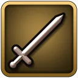 Colossus Greatsword | The holder: +330 attack damage. It is no longer offered as loot once you own one copy. | Tier 5 | Offensive | 330 | |||||||||||
 Crimson Reliquary Crimson Reliquary | The holder: +850 maximum health. When the holder is below 50% health after taking damage (at most once every 10 seconds), it applies Crimson Frenzy (+250% lifesteal on attack damage) to itself for 3 seconds. | Tier 5 | Defensive | 850 | |||||||||||
 Dawnfire Brazier Dawnfire Brazier | Every second, the holder deals 60 magical damage to all enemies within 2 cells of itself. It is no longer offered as loot once you own one copy. | Tier 5 | Offensive | ||||||||||||
 Gilded Invitation Gilded Invitation | Global item: it is never given to a unit and works from the moment you own it. Your shop offers units as if you were one level higher. It is no longer offered as loot once you own one copy. | Tier 5 | Global | ||||||||||||
 Glacier Heart Glacier Heart | The holder: +10 armour. At the start of combat, the holder deals 250 magical damage to all enemies within 3 cells of itself and applies Glacial Chill (-45% attack speed, -45% movement speed) to the same targets for 4 seconds. | Tier 5 | Defensive | 10 | |||||||||||
 Gravecloth Mantle Gravecloth Mantle | At the start of combat, the holder applies Grave-Cloth (one killing blow per combat survived at 1 health) to itself and all allies within 1 cell for the rest of combat. | Tier 5 | Support | ||||||||||||
 Hushthorn Blade Hushthorn Blade | The holder: +70 attack damage. When the holder lands an attack (at most once every 10 seconds), it applies Silenced (items) (cannot cast abilities) to the unit it hit for 5 seconds. | Tier 5 | Offensive | 70 | |||||||||||
 Last Stand Banner Last Stand Banner | Global item: it is never given to a unit and works from the moment you own it. All your units, summoned ones and your commander included: +15% attack damage. It is no longer offered as loot once you own one copy. | Tier 5 | Global | 15 | |||||||||||
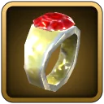 Rebirth Sigil | The holder: one revival per combat at 50% of maximum health. | Tier 5 | Support | ||||||||||||
 Restless Gravestone Restless Gravestone | At the start of combat, the holder plants a Restless Gravestone in the nearest free cell. Restless Gravestone is a placeable: it never moves or attacks, and it does not keep your side in the fight. It is no longer offered as loot once you own one copy. | Tier 5 | Support | ||||||||||||
 Sanctuary Bell Sanctuary Bell | The holder: +20% magic resistance. At the start of combat, the holder gives itself and all allies within 1 cell a shield that absorbs 400 damage for the rest of combat. | Tier 5 | Support | 20 | |||||||||||
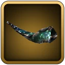 Stormcaller Horn | 2 seconds into combat (once per combat), the holder summons a Stormhide Beast in the nearest free cell. | Tier 5 | Support | ||||||||||||
 Titan's Heart Titan's Heart | The holder: +1,500 maximum health. Every second, the holder heals itself for 2% of its own maximum health. | Tier 5 | Defensive | 1,500 | |||||||||||
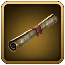 Veteran's Charter | Global item: it is never given to a unit and works from the moment you own it. You may field one more unit than your level allows (unit cap). It is no longer offered as loot once you own one copy. | Tier 5 | Global | ||||||||||||
 Warlord's Banner Warlord's Banner | At the start of combat, the holder applies Warlord's Command (+8% attack damage, +5 armour, +10% lifesteal on attack damage) to itself and all allies within 2 cells for the rest of combat. | Tier 5 | Support | ||||||||||||
 Warmaster's Codex Warmaster's Codex | Global item: it is never given to a unit and works from the moment you own it. All your units, summoned ones and your commander included: +12% attack speed, +3 armour. It is no longer offered as loot once you own one copy. | Tier 5 | Global | 12 | 3 | ||||||||||
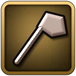 Worldsplitter Axe | The holder: +50 attack damage, +50% attack speed, +20% critical strike chance, critical strikes deal 175% damage instead of the usual 200%. | Tier 5 | Offensive | 50 | 50 | 20 | 175 |